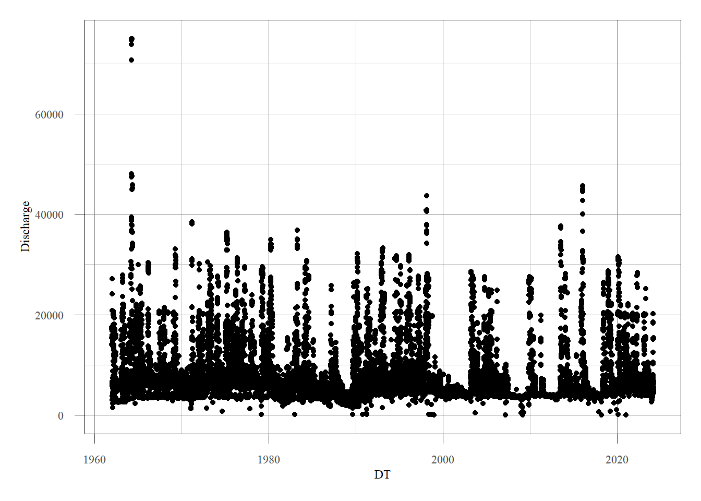
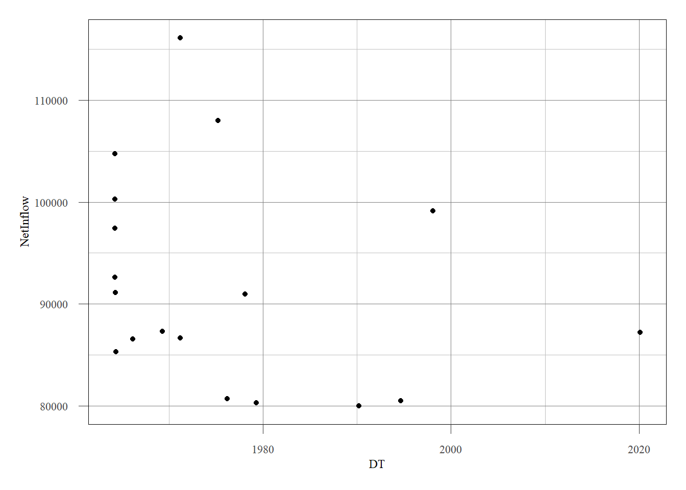
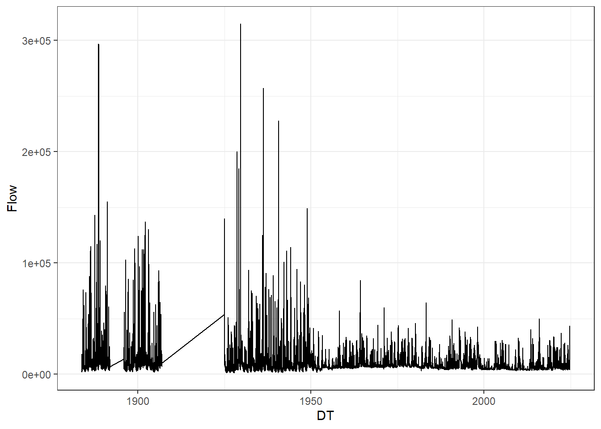
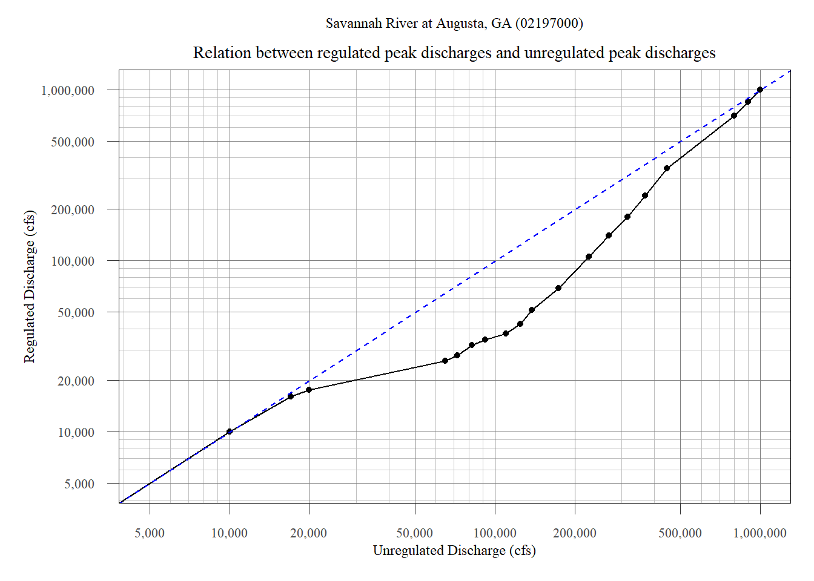
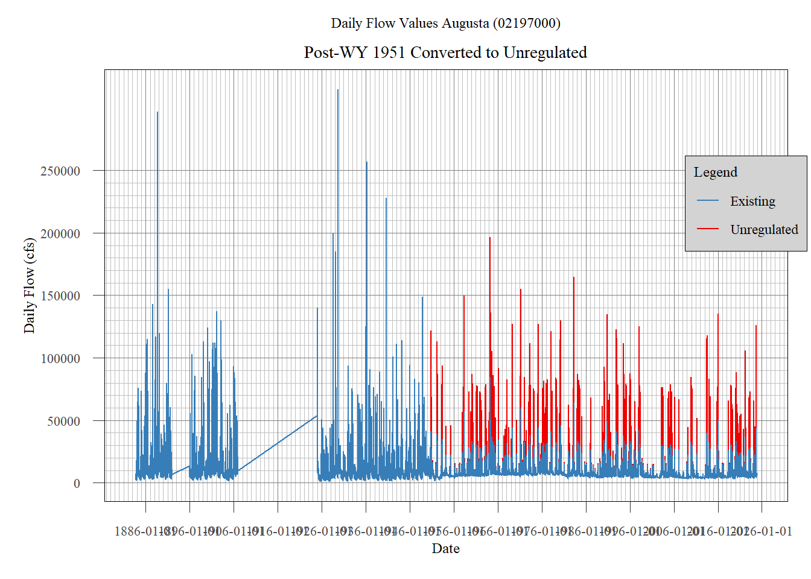

# Thurmond POR data ############################################################
# Inputs are raw text files copied from WM Site
# Dan McGraw
# 6-March-2024
################################################################################
## Clear workspace
rm(list = ls(all.names = TRUE))
## Load Libraries
#install.packages("tidyverse")
library(tidyverse)
library(ggplot2)
library(RColorBrewer)
library(lubridate)
library(scales)
library(zoo)
source("E:/R/theme_USACE.r")Thurmond PA - R Scripting
Overview
This walkthrough is to provide a description of R scripts/files used in the development of the J. Strom Thurmond Dam Hydrologic Hazard Curve (HHC). The readme files contained in the project folder provide a summary of various scripts. Algorithim development is an iterative process, so there was not a singular centralized script. The document will incorporate the contents of several scripts developed for the HHC. R is an open source, free software. All the libraries/functions used have extensive information online on their use and trouble shooting.
Period of Record Data Analysis
Data requests for existing period of record (POR) data should be completed through the home district’s water management section. Typical data stored for projects throughout the USACE portfolio range from observed lake elevation, stage, flow, precipitation, temperature, snow depth, snow water equivalent, and computed inflow at various time intervals.
The POR data for JST Dam was obtained from the (internal facing) Savannah District Water Management website. The data was copy-pasted from the historic data query into Notepad++ and saved as .txt file. The data needs to be delimited prior to use in R.
Data Import, Formatting, and Export
The following code blocks were taken from ThurmondPOR_Data.R. The first block below also serves as a format for scripting best practices. Commenting code is invaluable (comments are the only way I can remember what I did in the script, months later).
This section contains a commented header (note: # Header ##### will name a section of code). It is good practice to clear the environmental at the start of a script. The necessary libraries are also called at the top of a script. In order to load a library, it has to have been previously downloaded. install.packages has been included and commented out as an example. The line theme_USACE.r is ggplot theme created by Brian Breaker.
The next step is to read the delimited test files containing the POR data. These are all saved in the same folder which is pordir. Note that the data should be in .csv or .txt files.
# Read files ###################################################################
# Locate directory/folder with POR data
pordir <- "E:/1.Thurmond/Chapter 4/HH/Data/Project POR Data/"
# Create file path of the POR txt files
thur_elev_file <- paste0(pordir,"ThurmondDL_3-6-2024_ELEV.txt")
thur_flows_file <- paste0(pordir,"ThurmondDL_3-6-2024_NetInflow_Discharge.txt")
thur_stor_file <- paste0(pordir,"ThurmondDL_3-6-2024_STOR.txt")
thur_gen_file <- paste0(pordir,"ThurmondDL_3-6-2024_GEN.txt")
# Read text files
thur_elev <- read.table(thur_elev_file)
thur_flows <- read.table(thur_flows_file)
thur_stor <- read.table(thur_stor_file)
thur_gen <- read.table(thur_gen_file)Headings were not read in with the data. These were added after import based on existing user knowledge of the fields. This code block is using dplyr from the tidyverse package. Tidyverse works very well with the pipe operator (%>%). Think of this as:
new data name <- old data name >input> function
thur_elev <- thur_elev %>% rename(Date = V1,DOW = V2, Elev_29 = V3)
thur_flows <- thur_flows %>% rename(Date = V1,DOW = V2, NetInflow = V3, Discharge = V4)
thur_stor <- thur_stor %>% rename(Date = V1,DOW = V2, Storage = V3)
thur_gen <- thur_gen %>% rename(Date = V1,DOW = V2, Gen = V3)An example of the thur_flows dataset is below. Note the data was downloaded in descending date, this will be important later.
head(thur_flows) Date DOW NetInflow Discharge
1 03/05/2024 Tue 10412 6177
2 03/04/2024 Mon 15313 6490
3 03/03/2024 Sun 6656 6656
4 03/02/2024 Sat 6341 6694
5 03/01/2024 Fri 7259 4436
6 02/29/2024 Thu 2606 4371The day of the week was not significant for this analysis. It was dropped from the dataset.
thur_elev <- thur_elev %>% select (-c(DOW))
thur_flows <- thur_flows %>% select (-c(DOW))
thur_stor <- thur_stor %>% select (-c(DOW))The date field will be very important for the analysis. Initially, it is common for R to read the date field as a character data-type. This means there is no numerical basis to the values (the dates are just words). The dates need to be converted a date data-type for this analysis. For example, once the dates are formatted correctly, they can be arranged by increasing date. This is done using the as.Date function. Errors can arise when the dates are not formatted uniformly. The function allows several “try” inputs for cases like that. Another breakdown of the pipe operator is shown above the code block:
thur_flows_updated = thur_flows_existing + a new DATE column (mutate), called DT, that will go before NetInflow
thur_flows <- thur_flows %>% mutate(DT = as.Date(Date,format = "%m/%d/%Y"),.before = NetInflow )
thur_elev <- thur_elev %>% mutate(DT = as.Date(Date,format = "%m/%d/%Y"),.before = Elev_29)
thur_stor <- thur_stor %>% mutate(DT = as.Date(Date,format = "%m/%d/%Y"),.before = Storage)See the difference:
class(thur_flows$Date)[1] "character"class(thur_flows$DT)[1] "Date"Now the dates can be arranged by increasing date.
thur_elev <- thur_elev %>% arrange(DT)
thur_flows <- thur_flows %>% arrange(DT)
thur_stor <- thur_stor %>% arrange(DT)An advantage of using R instead of excel is the ability to do column-wide functions without click & drag. The elevation data needs to be in NAVD88. The conversion from NGVD29 to NAVD88 is: \[ NAVD88 = NGVD29 - 0.7\]
# Create a new dataframe (df) for NAVD88 elevation
thur_elev88 <- thur_elev %>% mutate(Elev_88 = Elev_29 - 0.7)
# Drop the ngvd29 column from the navd88 df to avoid confusion
thur_elev88 <- thur_elev88 %>% select(-c(Elev_29))At this point of the analysis the data was exported as csv files. These csv files could serve as a starting point for analysis in different scripts, without having to clean up the data as much (date will always need to be formatted as.Date). Note that an R & DSS package exists: https://github.com/eheisman/dssrip. The write.csv function has been commented out so the code will not export any files during this walkthrough.
thur_elev_outfile <- paste0(pordir,"csv/Thurmond3-6-2024_ELEV.csv")
thur_elev88_outfile <- paste0(pordir,"csv/Thurmond3-6-2024_ELEV_88.csv")
thur_flows_outfile <- paste0(pordir,"csv/Thurmond_3-6-2024_NetInflow_Discharge.csv")
thur_stor_outfile <- paste0(pordir,"csv/Thurmond_3-6-2024_STOR.csv")
#write.csv(thur_elev,thur_elev_outfile)
#write.csv(thur_elev88,thur_elev88_outfile)
#write.csv(thur_flows,thur_flows_outfile)
#write.csv(thur_stor,thur_stor_outfile)Historic Inflows & Pool Elevations
An important first step of data analysis is understanding what the data looks like. R was used to quickly provide historic pool levels, large inflows, and additional time series context.
# What years are contained within the POR
thryears <- unique(year(thur_flows$DT))
# What does the POR data look like
ggplot(data = thur_flows,aes(x=DT,y=Discharge)) + geom_point()+theme_USACE()
How many inflows above 80,000 cfs (arbitrary) have there been?
thur_flows %>% filter(NetInflow > 80000)%>%
ggplot(aes(x=DT,y=NetInflow))+geom_point() + theme_USACE()
The top 10 largest pool elevations and inflows can be obtained as follows:
# MAX Pool Elevations (top 10)
thur_elev %>% top_n(10,Elev_29)%>% arrange(desc(Elev_29)) Date DT Elev_29
1 04/11/1964 1964-04-11 336.46
2 04/10/1964 1964-04-10 336.31
3 12/31/2015 2015-12-31 335.94
4 01/01/2016 2016-01-01 335.94
5 01/02/2016 2016-01-02 335.93
6 04/09/1964 1964-04-09 335.73
7 02/07/1998 1998-02-07 335.45
8 05/06/1964 1964-05-06 335.40
9 03/30/1964 1964-03-30 335.38
10 02/06/1998 1998-02-06 335.37# MAX Pool Elevations (top 10)
thur_flows %>% top_n(10,NetInflow) %>% arrange(desc(NetInflow)) Date DT NetInflow Discharge
1 03/03/1971 1971-03-03 116127 3634
2 03/14/1975 1975-03-14 108026 14826
3 04/08/1964 1964-04-08 104761 36554
4 03/26/1964 1964-03-26 100266 14519
5 02/04/1998 1998-02-04 99121 16127
6 04/07/1964 1964-04-07 97413 12778
7 03/27/1964 1964-03-27 92612 15964
8 04/09/1964 1964-04-09 91136 70782
9 01/26/1978 1978-01-26 90983 15167
10 04/16/1969 1969-04-16 87295 6716Creating Annual Maxima Data
Hydrologic analysis uses annual maxima series (AMS) based on water years (starting on October 1). Using the correctly formatted date column, an AMS can be created for inflow and reservoir pool elevation/stage. Note that the reservoir inflow is regulated. The first step is determining the water year of each data point.
# Create separate columns of Year, Month, Day as numbers
thur_flows <- thur_flows %>% mutate(Yr = year(DT),Mon = month(DT),Day = day(DT))
# ifelse is a binary yes/no operator. If the month greater than 10, WY = Yr+1
thur_flows <- thur_flows %>% mutate(WaterYear = ifelse(Mon >= 10, Yr + 1, Yr))
thur_elev88 <- thur_elev88 %>% mutate(Yr = year(DT),Mon = month(DT),Day = day(DT))
thur_elev88 <- thur_elev88 %>% mutate(WaterYear = ifelse(Mon >= 10, Yr + 1, Yr))Now that the data can be grouped by water year, the annual max of each water year can be obtained
annual_max_flows <- thur_flows %>%
group_by(WaterYear) %>%
summarize(MaxInflow = max(NetInflow),
Date = DT[which.max(NetInflow)],
Month = month(DT[which.max(NetInflow)]),
Day = day(DT[which.max(NetInflow)]))
annual_max_stage88 <- thur_elev88 %>%
group_by(WaterYear) %>%
summarize(Max_Elev = max(Elev_88),
Date = DT[which.max(Elev_88)],
Month = month(DT[which.max(Elev_88)]),
Day = day(DT[which.max(Elev_88)]))
# export if necessary
# write.csv(annual_max_stage88,paste0(pordir,"Stage_AMS.csv"))
# write.csv(annual_max_flows,paste0(pordir,"Reg_Flow_AMS.csv"))Critical Inflow Duration Analysis
This section of code aimed to determine the distribution of inflow durations at JST Dam. The procedure used was from from RMC-TR-2018-03 - “Hydrologic Hazard Methodology for Semi-Quantitative Risk Assessments”. The TR defines critical inflow duration as the inflow duration that results in the highest water surface elevations for the reservoir of interest.
According to RMC-TR-2018-03, three to 5 (3-5) historical peak reservoir events should be identified. The inflow, discharge, and stage for these events should be used to determine the critical inflow duration. The TR states “select events that are consistent with the types of events likely to be the driver of extreme peak stages”.
Due to the highly regulated nature of JST dam, the driver of extreme stage could vary from shorter, localized inflows to the dam OR longer, basin-wide inflows to the dam. In order to reach an understanding of basin operations as well as a good starting point for the critical inflow duration, the following analyses were done:
Analyze the reservoir elevation rate of change
- Determine the daily rate of change of reservoir elevation (ft/day)
- Identify the top 150 daily rates (increasing)
# Create and Set WSE Rate column to 0
thur_elev88$WSERate <- NA
thur_elev88$WSERate[1]<-0
# Get rate of changer per day
for (i in 2:length(thur_elev88$Elev_88)){
day2 = thur_elev88$Elev_88[i]
day1 = thur_elev88$Elev_88[i-1]
stagedelta = day2 - day1
thur_elev88$WSERate[i] = stagedelta
}
# Select the top 150 rates
FastRise <- thur_elev88 %>%
arrange(desc(WSERate)) %>% slice_max(WSERate,n=150)
# Plot the rates against their corresponding reservoir elevations
ggplot(data=FastRise,aes(x=WSERate,y=Elev_88))+geom_point()+theme_USACE()+
labs(x = "Max Daily Rate of Change (ft/day)", y = "Peak Reservoir Elev (NAVD88)")
This is helpful, but it can only tell so much since the inflow data is daily.
Determine the inflow duration corresponding to the reservoir pool AMS
- Loop through all high pool events and obtain corresponding inflow and discharge hydrographs from 7 days before and after
- Find days during event where inflow > discharge
- Save the hydrograph image and table
- Create distribution of inflow durations
This code will save a csv and png of the inflow event
# NOTE annual_max_stage88$Date is a formatted date column
ams_dates <- annual_max_stage88$Date
# ams_dates <- annual_max_flows$Date
eventDTs <- ams_dates
# Grab flow hydrographs 14 days before and after max pool
eventDTs_start <- eventDTs - 7
eventDTs_end <- eventDTs + 7
thur_rep_hydrographs <- list()
thur_flood_durations <- list()
flow.colors <- c("Inflow" = "#333BFF", "Outflow" = "orangered2")
for (i in 1:length(eventDTs)){
hist_pool_date <- eventDTs[i]
dt1 <- which(thur_flows$DT == eventDTs_start[i])
dt2 <- which(thur_flows$DT == eventDTs_end[i])
if (eventDTs_start[i] < thur_flows$DT[1]){
dt1 <- 1
}
hydrograph <- thur_flows[dt1:dt2,]
hydrograph$Event <- eventDTs[i]
thur_rep_hydrographs[[i]] <- hydrograph
plot_date <- as.character(format(hist_pool_date, "%d-%b-%Y"))
flood_dur_plot<-ggplot(data = hydrograph)+
geom_line(aes(x=DT,y=NetInflow,color="Inflow"))+geom_point(aes(x=DT,y=NetInflow,color="Inflow"))+
geom_line(aes(x=DT,y=Discharge,color="Outflow"))+geom_point(aes(x=DT,y=Discharge,color="Outflow"))+
theme_USACE()+
ggtitle(paste0("Record Pool Event on ",plot_date))+
scale_x_date(date_breaks = "1 day")+labs(x="Date",y="Discharge(cfs)",color = "Legend")+
scale_color_manual(values = flow.colors)+theme(axis.text.x = element_text(angle = 90, hjust = 1))+
theme(plot.title = element_text(hjust = 0.5))+
theme(legend.position = c(0.8,0.8))
# Find where Inflow > outflow for flood duration
flood_dates <- hydrograph$DT[hydrograph$NetInflow >= hydrograph$Discharge]
peakflowdate <- hydrograph$DT[max(hydrograph$NetInflow) == hydrograph$NetInflow]
event_index <- which(flood_dates == peakflowdate)
if (length(event_index) == 0){
event_index <- length(flood_dates)+3
}
# Find consecutive dates around eventDT
start_index <- event_index
end_index <- event_index
# Expand the start index to include previous consecutive dates
while (start_index > 1 && flood_dates[start_index] - flood_dates[start_index - 1] == 1) {
start_index <- start_index - 1
}
# Expand the end index to include following consecutive dates
while (end_index < length(flood_dates) && flood_dates[end_index + 1] - flood_dates[end_index] == 1) {
end_index <- end_index + 1
}
# Extract consecutive dates
consecutive_dates <- flood_dates[start_index:end_index]
# Flood Duration in Days
flood_dur <- length(consecutive_dates)
# march 21 2006 is tough, duration likely = 4-5 but outflow was always larger than inflow
# peak outflow matched peak inflow
thur_flood_durations[[i]] <- data.frame(Event = hist_pool_date,Dur_days = flood_dur)
# Write CSV - uncomment to save
#write.csv(hydrograph,paste0("E:/1.Thurmond/Chapter 4/HH/Data/Project POR Data/FloodDurations/Flood_",hist_pool_date,".csv"),row.names = F)
# Save plot of flood event - uncomment to save
#ggsave(paste0("E:/1.Thurmond/Chapter 4/HH/Data/Project POR Data/FloodDurations/Plots/",hist_pool_date,".png"),
#flood_dur_plot,width = 8, height = 6,dpi = 300)
}
# Convert the results to a usable df
thur_dur <- do.call(rbind.data.frame,thur_flood_durations)thur_dur contains the inflow duration of each high pool event. This was plotted as a histogram with a binwidth of 1-day to determine an initial estimate for the critical inflow duration.
mdur <- mean(thur_dur$Dur_days)
sddur <- sd(thur_dur$Dur_days)
meddur <- median(thur_dur$Dur_days)
# Base R does not have a Mode function.
Mode <- function(x) {
ux <- unique(x)
ux[which.max(tabulate(match(x, ux)))]
}
# Compute the mode
print(paste0("The mode is: ",Mode(thur_dur$Dur_days)," days"))[1] "The mode is: 4 days"The resulting hyetograph is shown below.
# setting up a ggplot looks worse than it is
ggplot(data = thur_dur,aes(x=Dur_days))+
geom_histogram(binwidth=1,fill=histcolor,color=linecolor,alpha=0.9)+
scale_x_continuous(breaks = seq(1,14,1))+
theme_USACE()+
labs(x = "Flood Duration (Days)",y="Count",
subtitle = "Based on AMS Flood Events (1962 - 2024)")+
ggtitle("Distribution of Flood Durations at Thurmond Dam")+
geom_vline(xintercept = mdur, color=meancolor)+
geom_vline(xintercept = (mdur+sddur), color=sdcolor, linetype = "dashed")+
geom_vline(xintercept = (mdur-sddur), color=sdcolor, linetype = "dashed")+
geom_text(aes(x=mdur, label=paste("\nMean = ",round(mdur,2),sep=""),
y=7.5), colour=meancolor, angle=90)+
geom_text(aes(x=(mdur+sddur), label=paste("\n+1SD = ",round(mdur+sddur,2),sep=""),
y=7.5), colour=sdcolor, angle=90)+
geom_text(aes(x=(mdur-sddur), label=paste("\n-1SD = ",round(mdur-sddur,2),sep=""),
y=7.5), colour=sdcolor, angle=90)+
theme(plot.title = element_text(hjust = 0.5),
plot.subtitle = element_text(hjust = 0.5))
Based on the results of the AMS duration distribution, the critical inflow duration is likely 3-, 4-, or 5-days. With this in mind, five historical peak reservoir events were identified to estimate a final critical duration. The loop used to create the inflow duration distribution contained a code to export a csv and png of each AMS event. These were used to estimate a final critical inflow duration. This has been replicated below.
event <- c("11-Apr-1964","30-Mar-1964","3-Mar-1971","17-Mar-1975","7-Feb-1998","1-Jan-2016")
duration <- c(5,4,4,4.5,4.5,4)
mean_inflow_dur <- round(mean(duration),2)
geomean_inflow_dur <- round(exp(mean(log(duration))),2)
cat("The mean inflow duration is ",mean_inflow_dur,"\nThe geometric mean inflow duration is ", geomean_inflow_dur)The mean inflow duration is 4.33
The geometric mean inflow duration is 4.32Both 4-day and 5-day could be considered for the critical inflow duration. During the project, the 4-day inflow was selected as the critical duration.
As a preemptive analysis of seasonallity, the stage seasonallity was analyzed.
ggplot(data = annual_max_stage88,aes(x = Month))+
geom_histogram(binwidth=1,fill="lightblue",color="black",alpha=0.9)+
stat_density(aes(y = ..count..), geom = "line", color = "green3", size = 1) +
scale_x_continuous(breaks = seq(1,12,1),
labels = c("Jan","Feb","Mar","Apr","May","June","July","Aug","Sept","Oct","Nov","Dec"))+
scale_y_continuous(breaks = seq(0,20,2),minor_breaks = seq(0,20,1))+
theme_USACE()+
labs(x = "Month",y="Count",subtitle = "Based on AMS of POR Stage Elev.(1962 - 2024)")+
ggtitle("Flood Seasonality at Thurmond Dam")+
theme(plot.title = element_text(hjust = 0.5), plot.subtitle = element_text(hjust = 0.5))
Unregulated 4-day Inflow AMS
The next steps were to create a timeseries of unregulated inflow data that can be used to create an AMS of 4-day inflow volumes. This section incorporates code used in CreatingUnregulatedData_Augusta.R and Crtical Volume Duration.R.
The Augusta USGS Streamgage was the subject of a 1990 USACE & USGS report that analyzed the relationship between regulated and unregulated flow-frequency estimates. Due to the existence of this study and the longer gage record, the Augusta gage was used as the primary data source for inflow data. The overlapping record of the Augusta gage with the former USGS streamgage at JST Dam was used to verify the drainage area ratio from the design memo (0.93).
\[ Q_T = 0.93 * Q_A\]
In order to create a 4-day inflow volume annual maximum series (AMS), the daily streamflow data at the Augusta gage was processed using the following steps:
The effect of regulation was assumed to start in 1951, which was when deliberate impoundment began.
Daily regulated streamflow data at Augusta was converted to unregulated daily streamflow using the relationship shown in Figure 14 (PA Report - Chapter 4). This figure was digitized by hand from the 1990 study. Unregulated flows were interpolated from the curve shown in the figure.
4-day unregulated volumes were estimated from available daily unregulated streamflow data, now spanning 1883 – present (with some gaps)
4-day unregulated volume AMS was obtained for each water year
The peak-to-volume ratio was calculated using the Augusta gage peak-flow AMS. The peak flow was divided by the 4-day volume for corresponding floods. The average peak-to-volume ratio was 1.54.
The peak-to-volume ratio was used to estimate the 4-day volume annual maximum values for the gaps in the daily data (1892 to 1896 and 1906 to 1925).
The drainage area ratio (0.93) was applied to the 4-day volume AMS (regardless of year) to estimate the 4-day inflow volume AMS at Thurmond Dam.
These steps & figures will be replicated below.
Unregulated Inflow Data
Before any of the steps above, the data should be imported and formatted.
# Import Augusta Daily & Format Dates
library("dataRetrieval")
# Import using Augusta Site Number
siteNo <- "02197000"
pCode <- "00060" #00061 - # Check codes from USGS
start.date <- "1700-01-01" # arbitraty to get all info
end.date <- "2024-12-31"
augusta_daily <- readNWISdv(siteNumbers = siteNo,
parameterCd = pCode,
startDate = start.date,
endDate = end.date)
augusta_daily <- renameNWISColumns(augusta_daily)
augusta_daily <- augusta_daily %>% mutate(DT = as.Date(Date),.before = Flow)
# Add water year column
augusta_daily <- augusta_daily %>% mutate(Yr = year(DT),Mon = month(DT),Day = day(DT))
augusta_daily <- augusta_daily %>% mutate(WaterYear = ifelse(Mon > 9, Yr + 1, Yr))
# Make sure the data is there
ggplot(data = augusta_daily) + geom_line(aes(x=DT,y=Flow)) + theme_bw()
The regulated-unregulated relationship was digitized from the 1990 report and imported into R.
# Import Digitized Data for Figure 35 (1990) - Exceedance Prob for Unregulated and Regulated
fig35 <- read.csv("E:/1.Thurmond/Chapter 4/HH/Data/Savannah River - USGS Unregulated Study/Figure35data.csv")
fig35 <- fig35 %>% mutate(NEP = 100-ExceedanceProb)
# Convert Reg and Unreg at Augusta
augusta_conversion <- fig35 %>% mutate(Aug_RegQ = PeakQRegulated,Aug_UnregQ = PeakQUnregulated)
augusta_conversion <- augusta_conversion %>% select(c(Aug_RegQ,Aug_UnregQ))
# Recreate Figure 35
logscalebreaks = c(1000,5000,10000,20000,50000,100000,200000,500000,1000000)
logscaleminor_breaks = c(seq(2000, 9000, by = 1000),seq(20000, 90000, by = 10000),
seq(200000, 900000, by = 100000))
ggplot(data=fig35,aes(x=PeakQUnregulated,y=PeakQRegulated))+
geom_point()+
geom_line()+
theme_USACE()+
ggtitle("Savannah River at Augusta, GA (02197000)")+
labs(x="Unregulated Discharge (cfs)",y="Regulated Discharge (cfs)",subtitle = "Relation between regulated peak discharges and unregulated peak discharges",
color = "Legend")+
theme(plot.title = element_text(hjust = 0.5),plot.subtitle = element_text(hjust = 0.5),legend.position = "bottom")+
geom_abline(intercept = 0, slope = 1, color = "blue1", linetype = "dashed") +
scale_y_log10(labels = label_comma(drop0trailing = TRUE),
breaks = logscalebreaks,
minor_breaks = logscaleminor_breaks)+
scale_x_log10(labels = label_comma(drop0trailing = TRUE),
breaks = logscalebreaks,
minor_breaks = logscaleminor_breaks)+
coord_cartesian(xlim = c(5000,1000000),ylim = c(5000,1000000))
The Peak Flow dataset at Augusta will also be used. This data was obtained from the USGS website. Additional post processing was done to make this easier (i.e. some manual entry to Flow Notes)
# Import and Format
augusta_peak_ams <- read.csv("E:/1.Thurmond/Chapter 4/HH/Data/Augusta Gage/csv/Augusta_Peak_AMS.csv",header = T)
augusta_peak_ams <- augusta_peak_ams %>% mutate(DT = as.Date(Date),.before = Flow)
augusta_peak_ams <- augusta_peak_ams %>% mutate(Yr = year(DT),Mon = month(DT),Day = day(DT))
augusta_peak_ams <- augusta_peak_ams %>% mutate(WaterYear = ifelse(Mon > 9, Yr + 1, Yr))
augusta_peak_ams <- augusta_peak_ams %>% rename(Peak_Flow = Flow)- The effect of regulation was assumed to start in 1951, which was when deliberate impoundment began.
# Regulation Assumed to start in 1951
regulation_wy <- 1951
pre_reg <- augusta_daily %>% filter(WaterYear < regulation_wy)
aug_reg <- augusta_daily %>% filter(WaterYear >= regulation_wy)
pre_reg_peak <- augusta_peak_ams %>% filter(WaterYear < regulation_wy)
aug_reg_peak <- augusta_peak_ams %>% filter(WaterYear >= regulation_wy)- Daily regulated streamflow data at Augusta was converted to unregulated daily streamflow using the relationship shown in the relationship above. This figure was digitized by hand from the 1990 study. Unregulated flows were interpolated from the curve shown in the figure.
# Estimate Unregulated from approx function
Augusta_Unreg <- approx(augusta_conversion$Aug_RegQ, augusta_conversion$Aug_UnregQ, xout = aug_reg$Flow)[2]
Augusta_Unreg_peak <- approx(augusta_conversion$Aug_RegQ, augusta_conversion$Aug_UnregQ,
xout=aug_reg_peak$Peak_Flow)[2]
# add to regulated data
aug_reg <- aug_reg %>% mutate(Unregulated_Flow = round(Augusta_Unreg$y,0))
aug_reg_peak <- aug_reg_peak %>% mutate(Unregulated_PeakFlow = round(Augusta_Unreg_peak$y,0))
# create a 1:1 column of unregulated flow to make bind_rows easier
pre_reg <- pre_reg %>% mutate(Unregulated_Flow = round(Flow,0))
pre_reg_peak <- pre_reg_peak %>% mutate(Unregulated_PeakFlow = round(Peak_Flow,0))
# Combine datasets
augusta_daily_unreg <- bind_rows(pre_reg,aug_reg)
AMS_Peak <- bind_rows(pre_reg_peak,aug_reg_peak)
# remove any confusion
rm(Augusta_Unreg)
rm(Augusta_Unreg_peak)
# Check results for sanity
ggplot(data = augusta_daily_unreg) +
geom_line(aes(x=DT,y=Unregulated_Flow,color = "Unregulated"))+
geom_line(aes(x=DT,y=Flow,color="Existing"))+
theme_USACE()+
labs(x = "Date",
y = "Daily Flow (cfs)",
title = "Daily Flow Values Augusta (02197000)",
subtitle = "Post-WY 1951 Converted to Unregulated")+
scale_y_continuous(breaks = seq(0,250000,50000),minor_breaks = seq(0,250000,10000))+
scale_x_date(breaks = "10 year",minor_breaks = "1 year")+
scale_color_manual(values = c("#377EB8", "red2"),
name = "Legend",
labels = c("Existing","Unregulated"))+
theme(plot.title = element_text(hjust = 0.5), plot.subtitle = element_text(hjust = 0.5),legend.position = c(.85,.8))
- 4-day unregulated volumes were estimated from available daily unregulated streamflow data, now spanning 1883 – present (with some gaps)
# Create Data with gaps to avoid rolling mean over the gaps (i.e. 1891-12-31 & 1896-01-01)
complete_dates <- seq(min(augusta_daily_unreg$DT), max(augusta_daily_unreg$Date), by = "day")
aug_unreg_complete <- merge(augusta_daily_unreg, data.frame(Date = complete_dates), by = "Date", all = TRUE)
# aug_unreg_complete[3010:3020,] # check
#naniar::vis_miss(aug_unreg_complete) # see gaps in data, uncomment to use
critdur <- 4
# rollmean is a 4 day rolling average. rollmeanr indicates that the window is aligned to the "right"
# This will compute a time series of 4-day inflow volumes
aug_unreg_complete <- aug_unreg_complete %>% mutate(VolDur_4day = round(rollmeanr(Unregulated_Flow,k = critdur, fill=NA),0))- 4-day unregulated volume AMS was obtained for each water year
AMS_4day <- aug_unreg_complete %>%
# Group by WY
group_by(WaterYear) %>%
# Take the largest value from each WY
top_n(1, VolDur_4day) %>%
# Ensures no duplicate years
distinct(WaterYear, .keep_all = TRUE) %>%
ungroup()
# Combine Peak and 4-day AMS to help stay organized
all_AMS <- left_join(AMS_Peak,AMS_4day,by = "WaterYear")
colnames(all_AMS) [1] "Agency" "Site" "Date.x"
[4] "DT.x" "Peak_Flow" "Flow_notes"
[7] "Gage" "Gage_notes" "Yr.x"
[10] "Mon.x" "Day.x" "WaterYear"
[13] "Unregulated_PeakFlow" "Date.y" "agency_cd"
[16] "site_no" "DT.y" "Flow"
[19] "Flow_cd" "Yr.y" "Mon.y"
[22] "Day.y" "Unregulated_Flow" "VolDur_4day" all_AMS <- all_AMS %>% select(c(DT.x,Peak_Flow,Flow_notes,WaterYear,Unregulated_PeakFlow,DT.y,Unregulated_Flow,VolDur_4day))
all_AMS <- all_AMS %>% rename(DT_Peak = DT.x, DT_Daily = DT.y)- The peak-to-volume ratio was calculated using the Augusta gage peak-flow AMS. The peak flow was divided by the 4-day volume for corresponding floods. The average peak-to-volume ratio was 1.54.
# Find the peaks and 4-day vols that are from the same event. 4 is the search threshold then
matchingAMS <- all_AMS %>% filter(DT_Peak >= DT_Daily - 4 | DT_Peak <= DT_Daily + 4)
matchingAMS <- matchingAMS %>% mutate(PeaktoVol = Unregulated_PeakFlow/VolDur_4day)
# Now Add this peak to vol data back to the AMS dataset
all_AMS <- all_AMS %>% mutate(Ratio_Peak_4d = ifelse(DT_Peak >= DT_Daily - 4 | DT_Peak <= DT_Daily + 4,Unregulated_PeakFlow/VolDur_4day,NA))
cat("The mean peak-to-volume ratio is ",round(mean(matchingAMS$PeaktoVol),2),"\nThe geometric mean peak-to-volume ratio is ", round(exp(mean(log(matchingAMS$PeaktoVol))),2),"\nThe median peak-to-volume ratio is ",round(median(matchingAMS$PeaktoVol),2))The mean peak-to-volume ratio is 1.54
The geometric mean peak-to-volume ratio is 1.46
The median peak-to-volume ratio is 1.39ggplot(data = matchingAMS)+
geom_histogram(aes(x =PeaktoVol),fill="lightblue",color="black",alpha=0.9,
breaks = seq(0.9,3.0,0.1))+
theme_USACE()+
ggtitle("Ratio of Peak Flow to 4-Day Volume at Augusta (02197000)")+
labs(x="Peak Flow/4-Day Vol", y="Count")+
scale_x_continuous(breaks = seq(0.9,3.0,0.1),minor_breaks = seq(0,3.0,0.05))+
scale_y_continuous(breaks = seq(0,25,1))+
geom_vline(xintercept = mean(matchingAMS$PeaktoVol), color="orange2")+
theme(plot.title = element_text(hjust = 0.5), plot.subtitle = element_text(hjust = 0.5))+
theme(axis.text.x = element_text(size=6.5))
- The peak-to-volume ratio was used to estimate the 4-day volume annual maximum values for the gaps in the daily data (1892 to 1896 and 1906 to 1925).
# Peak to volume ratio
PtVratio_4day <- mean(matchingAMS$PeaktoVol)
# Calculate missing 4 day volumes
all_AMS <- all_AMS %>% mutate(Peak_to_4day = round(Unregulated_PeakFlow/PtVratio_4day,0))
all_AMS <- all_AMS %>% mutate(Complete_4Day_AMS = ifelse(is.na(all_AMS$VolDur_4day),Peak_to_4day,VolDur_4day))- The drainage area ratio (0.93) was applied to the 4-day volume AMS (regardless of year) to estimate the 4-day inflow volume AMS at Thurmond Dam.
# Previously calculated drainage area ratio
DAratio <- 0.93
# Multiply the Augusta AMS values by the DA ratio
all_AMS <- all_AMS %>% mutate(Thurm_AMS_4day = round(DAratio*Complete_4Day_AMS,0))BONUS STEP: Prepare the data to be used in BestFit. This will use the flow notes to set perception threshold values & interval values (assumed to be +/- 20%). The interval calculation can be tough to decipher via code. It has been written out as an equation below.
\[ Interval_L = 0.80 * 0.93 * PeakQ/PeakToVol\] \[ Interval_U = 1.20 * 0.93 * PeakQ/PeakToVol\]
# Rename some columns to make it easier - this is because my variable naming was not as intuitive as it should have been
all_AMS <- all_AMS %>% rename(Aug_AMS_1day = Unregulated_Flow,
Aug_AMS_4day = VolDur_4day,
Aug_Complete_4Day_AMS = Complete_4Day_AMS)
# If there is no peak to 4day ratio, this was historic peak flow information
all_AMS <- all_AMS %>% mutate(BestFitNotes = ifelse(is.na(Ratio_Peak_4d),"Estimated from Peak AMS",NA))
# Computing intervals. ifelse ensures it only computs missing ones
all_AMS <- all_AMS %>% mutate(Interval_Lower =
ifelse(WaterYear<1876,round((DAratio*0.8*Unregulated_PeakFlow)/PtVratio_4day,0),NA),
Interval_MostLikely =
ifelse(WaterYear<1876,round((DAratio*1.0*Unregulated_PeakFlow)/PtVratio_4day,0),NA),
Interval_Upper =
ifelse(WaterYear<1876,round((DAratio*1.2*Unregulated_PeakFlow)/PtVratio_4day,0),NA))The allAMS dataframe can be exported to .csv or it can be further filtered to only include fields required for BestFit.
# Exporting allAMS - commented out
# write.csv(all_AMS,"E:/1.Thurmond/Chapter 4/HH/Data/Savannah River - USGS Unregulated Study/Thurmond_Unreg_AMS_Peak_1day_4day.csv",row.names = F)
# Selecting fields from allAMS that are required for BestFit
bestfit_input <- all_AMS %>% select(c(WaterYear,Peak_Flow,Flow_notes,Unregulated_PeakFlow,
Thurm_AMS_4day,BestFitNotes,
Interval_Lower,Interval_MostLikely,Interval_Upper))
# Export BestFit to csv - commented out
#write.csv(bestfit_input,"E:/1.Thurmond/Chapter 4/HH/Data/Savannah River - USGS Unregulated Study/Thurmond_Unreg_BestFitINPUT.csv",row.names = F)Theme USACE
Move this before the other code blocks for ggplot themes. If issues continue, remove +theme_USACE() from the ggplot chunks
theme_USACE <- function(base_size = 8){theme(
text = element_text(family = 'serif', color = 'black'),
line = element_line(colour = 'black', linewidth = 0.2),
rect = element_rect(colour = 'black', linewidth = 0.2),
plot.title = element_text(vjust = 3, size = 9),
plot.margin = unit(c(1,1,1,1), 'lines'),
panel.border = element_rect(fill = F),
panel.grid.major = element_line(colour = 'grey50', linewidth = 0.2),
panel.grid.minor = element_line(colour = 'grey75', linewidth = 0.1),
panel.background = element_rect(fill = 'white'),
#defaults legend to upper left, can/should be overridden based on graph
#legend.background = element_blank(),
legend.background = element_rect(fill = "lightgrey", colour = "black"),
legend.justification = c("left", "top"),
legend.position = c(0.8, 0.5),
# this value should be adjusted dependent on
# graph with the addition of another
# theme(legend.position = c(X, Y)) argument after theme_USACE()
# or... for no legend
# legend.position = element_blank(),
legend.key = element_blank(),
legend.title = element_text(size = 9),
#legend.title = element_blank(),
axis.title.x = element_text(size = 9),
axis.title.y = element_text(angle = 90, size = 9),
axis.text.x = element_text(margin = margin(8, 0, 0, 0)),
axis.text.y = element_text(margin = margin(0, 8, 0, 0)),
axis.ticks.length = unit(0.25 , 'cm')
)}